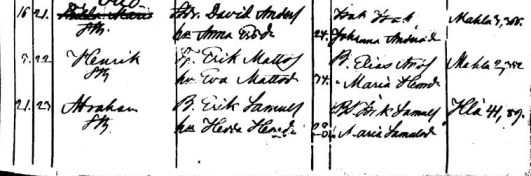

Isoisoisäni asui ns. vanhassa Murronahossa, josta tässä nostalginen tarpeeksi rikkinäinen kuva. Isäni rakensi sitten uuden Murronahon vuonna 1960 ja minä synnyin sitten siihen taloon.
Olen koonnut tälle sivustolle liudan LINKKEJÄ, jotka ovat hyödyllisiä sukututkijalle. Pelkästään netin avulla voit tutkia laajalti sukuasi, kunhan tiedät lähisukulaistesi tietoja 1800-1900 -luvun vaihteesta.

Vanhoja kirkonkirjoja ja sukutietoja etsiessä netistä ajautuu sellaiseen hurmokseen, ettei siitä meinaa yli enää päästäkään. Kuvassa alimmaisena pappani isän Aabraham Rossin synnyinilmoitus Saarijärven seurakunnan syntyineiden kirjasta 1861-1862 huhtikuulta 1862.